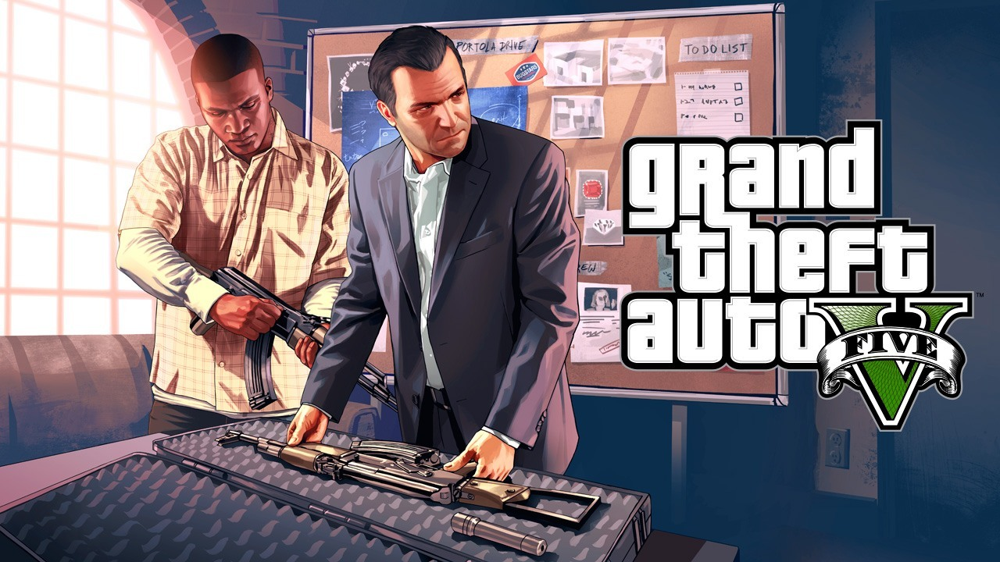

Grand Theft Auto V
Review of Grand Theft Auto V
Grand Theft Auto 5 is not only a preposterously enjoyable video game, but also an intelligent and sharp-tongued satire of contemporary America. It represents a refinement of everything that GTA 4 brought to the table five years ago. It’s technically more accomplished in every conceivable way, but it’s also tremendously ambitious in its own right. No other world in video games comes close to this in size or scope, and there is sharp intelligence behind its sense of humour and gift for mayhem. It tells a compelling, unpredictable, and provocative story without ever letting it get in the way of your own self-directed adventures through San Andreas.
Parents need to know that Grand Theft Auto V is an M-rated action game brimming with gang violence, nudity, extremely coarse language, and drug and alcohol abuse. It isn't a game for kids. Playing as hardened criminals, players kill not only fellow gangsters but also police officers and innocent civilians using both weapons and vehicles while conducting premeditated crimes, including a particularly disturbing scene involving torture. Women are frequently depicted as sexual objects, with a strip club mini-game allowing players to fondle strippers' bodies, which are nude from the waist up. Players also have the opportunity to make their avatars use marijuana and drink alcohol, both of which impact their perception of the world. None of the main characters in the game makes for a decent role model. All of them are criminals who think of themselves first and others rarely at all. Few games are more clearly targeted to an adult audience.
From a technical and design perspective, Grand Theft Auto V sets new bars. The world it presents is unrivalled in authenticity and vibrancy. It feels fluid and alive. Time passes organically, characters' lives progress, and there is a simply astounding quantity of side activities in which to engage. It's quite possible to explore the state of San Andreas for hours without moving the main story forward a stitch. In fact, that's part of the fun. And it's all been polished to a glossy sheen. The controls feel great, the visuals are lush, and a brilliant graphical interface empowers players, giving them all the information they need -- and only the information they need -- exactly when they need it. However, the writing isn't quite as sharp as it has been in previous installments; the humor is a bit broader and less sophisticated, and the main characters aren't as well developed (probably because there are now three), but this only impacts the overall experience a little. It remains a very impressive game.Graphics options are plentiful and powerful, with everything from standard quality and view-distance adjustments to a field-of-view slider (though it’s more limited than discriminating FOV players might want - modders have already remedied that). Controls are customizable, and you can play your own music library on the in-game radio. It’s hard to complain much about that.For the most part, the menus are well done and feel good to use with the mouse. That’s best exemplified with the web browser, which feels like you’d expect navigating a web page with a mouse to feel. The one place this breaks down a little is in the score menus; it’s a little tougher to navigate an Ammunation gun store’s wares with the mouse than it is with a D-pad or arrow keys, but it’s still totally workable. It’s simply a small reminder that this wasn’t originally a PC game.
Keep in mind, though, that much of the content is unequivocally geared for adult audiences. And even then it will not be for all tastes. Grand Theft Auto V puts players in the roles of criminals who show little remorse for their evil actions, and often even take pleasure in them. It's a dark fantasy with the potential to prove immense fun for those who are mature enough to properly appreciate its adult humor and able to clearly distinguish between right and wrong. It is not a game for younger players with developing psychologies. And adults who don't have a taste for role-playing a life of crime should probably give this game a wide berth.Nice PC-specific control touches, like not having to hammer a button to keep up running speed (just hold down Shift) and being able to hit a single button (Caps Lock by default) to activate a special ability make everything feel like a native PC game. You don’t get the annoying horizontal drift when running in first-person like you do in the PS4 and Xbox One versions, either.One of my favorite things about the control setup, though, is that like GTA 4 and a select few other games before it, GTA 5 lets you seamlessly swap between the mouse and keyboard and a gamepad on the fly. No need to go into a menu and swap - just push a button on one or the other, and all on-screen prompts change to reflect what you’re using. It’s a fantastic thing for a game like this, where running and gunning is more precise with a mouse and keyboard but driving or especially flying benefits greatly from the analog input of a thumbstick. You can even use both at once, if you like.

{kind=link}
{kind=link}